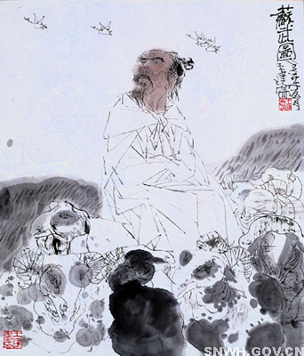

苏武墓
导读：苏武墓为一圆锥形夯土堆，墓冢南北长30米，东西宽20米，高4米。目前有清代康熙、乾隆和道光时“汉典属国墓碑”、“重修苏武墓门碑等”……

苏武墓位于武功县老城北1.5公里的武功乡龙门村。
苏武（？～公元前60年），字子卿，西汉杜陵（今长安县）人。汉武帝时为郎，天汉元年（公元前100年），汉武帝为了回报匈奴单于“尽归汉使之不降者路充国等”的善意，派封为中郎将的苏武、副中郎将张胜及假吏常惠等，送留汉的匈奴使归匈奴，还赠送单于大批财物。但单于错误地认为汉朝软弱，于是“骄益”之下，将苏武扣留匈奴，并千方百计诱降。但苏武始终坚贞不屈，后被流放北海（今俄罗斯贝加尔湖）牧羊。
苏武在北海，单于不给粮食，就挖鼠洞取洞中草籽充饥。苏武持汉节牧羊，卧起操持，节毛尽落。投降匈奴的李陵到北海劝降，同样被拒绝。
汉昭帝即位数年后，匈奴与汉和亲。汉要求放还苏武，匈奴谎称苏武已死。后来，汉使又到匈奴，常惠夜见汉使，告以以往一切，并让使者对匈奴说，汉天子在上林苑射中一只大雁，雁足上有书信，信中说苏武在某泽中。使者以常惠的话质问单于，单于感到惊奇。无奈，只好把苏武等9人一起放归汉。
始元六年（公元前81年）春天，苏武等回到长安，昭帝让他拜汉武帝陵园、宗庙，并任命他为典属国。苏武在匈奴停留19年，当年出使时还在壮年，等他回来时已须发皆白。神爵二年（公元前60年），苏武病逝。公元前51年，汉宣帝将苏武的像画于麒麟阁，以表彰他的节操。苏武出使匈奴19年，受尽磨难，持节不屈，千百年来被人们当作坚持民族气节的光辉典范。东汉史学家班固在《汉书》中赞曰：“使于四方，不辱使命，苏武有之矣！”
苏武墓为一圆锥形夯土堆，墓冢南北长30米，东西宽20米，高4米。目前有清代康熙、乾隆和道光时“汉典属国墓碑”、“重修苏武墓门碑等”。